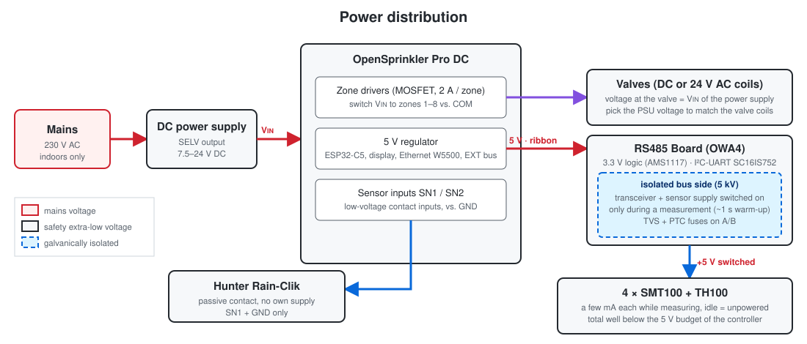

OpenSprinkler Pro avec capteurs RS485 – Guide de montage et d'utilisation
Ce guide décrit une installation professionnelle complète : OpenSprinkler Pro (DC, Ethernet) avec la carte RS485 OpenSprinkler, des sondes d'humidité du sol Truebner SMT100, un capteur de température/humidité de l'air Truebner TH100, un boîtier de jonction TrueCon100 et un détecteur de pluie Hunter Rain-Clik.
Pages liées : Configuration du capteur analogique, Automatisation capteurs et monitors, OpenSprinkler Pro.
Référence rapide (PDF, 2 pages)
Télécharger la référence rapide (anglais) · Référence rapide (allemand)
1. Composants
| Qté | Composant | Fonction |
|---|---|---|
| 1 | OpenSprinkler Pro, variante DC, Ethernet + antenne externe | Contrôleur, 8 zones, entrées capteur SN1/SN2, bus d'extension EXT |
| 1 | Alimentation DC + câble adaptateur 7,5–12 V DC (ADPK12VDC) | Alimentation du contrôleur et des vannes |
| 1–2 | Carte RS485 OpenSprinkler (adaptateur RS485 Truebner) | I²C → RS485/Modbus RTU, 4 borniers |
| 4 | Truebner SMT100 (RS485 Modbus) | Humidité du sol, température du sol, permittivité |
| 1 | Truebner TH100 (RS485 Modbus) | Température de l'air et humidité relative |
| 1 | Truebner TrueCon100 (RS485) | Boîtier de jonction de terrain, jusqu'à 10 capteurs sur un seul câble de bus |
| 1 | Hunter Rain-Clik | Contact de pluie sur SN1 |
| 2+2 | Supports rail DIN V4 | Montage sur rail DIN du Pro et de la carte RS485 |
| 20 | Connecteurs gel 3M 314 | Raccordement étanche des vannes dans le regard |
Une seule carte RS485 par contrôleur
La carte RS485 a l'adresse I²C fixe 0x4C. Le firmware pilote une carte par
contrôleur. Une deuxième carte sur le même contrôleur n'est pas détectée et peut perturber le
bus I²C. Les quatre borniers d'une carte forment le même bus et desservent ensemble jusqu'à
64 capteurs ; quatre SMT100 et le TH100 tiennent donc sur une seule carte. Si votre kit contient une deuxième
carte, gardez-la en réserve ou utilisez-la sur un second contrôleur.
2. Schéma de câblage

3. Schéma d'alimentation

- Le contrôleur est alimenté en DC (7,5–24 V) par l'alimentation. Cette même tension est commutée vers les sorties de zone ; choisissez donc la tension de l'alimentation en fonction des bobines des vannes (la variante DC pilote aussi les vannes standard 24 V AC).
- La carte RS485 prend son 5 V et l'I²C sur le bus EXT du contrôleur (câble plat). Elle n'a besoin d'aucune alimentation séparée.
- Le côté bus de la carte RS485 est isolé galvaniquement. L'alimentation des capteurs (+5 V sur les borniers) n'est activée que pendant une mesure (environ 1 s de préchauffage) ; les capteurs ne consomment donc presque rien entre deux lectures.
- Le Rain-Clik est un contact passif et n'a besoin que de SN1 + GND.
4. Montage
- Fixation. Clipsez deux supports rail DIN V4 sur l'OpenSprinkler Pro et deux sur la carte RS485, puis encliquetez les deux sur le rail DIN. Laissez de la place pour le câble plat et les presse-étoupes.
- Câble plat. Hors tension, reliez la carte RS485 au connecteur EXT du Pro. Vérifiez l'orientation (broche 1 / repère rouge des deux côtés).
- Ethernet et antenne. Branchez le câble réseau. Vissez l'antenne externe sur la prise SMA ; elle sert au WiFi/BLE/Zigbee même lorsque l'Ethernet est actif.
- Vannes. Reliez le fil commun de toutes les vannes à COM et le second fil de chaque vanne à la zone 1 … 8. Dans le regard, raccordez les fils avec les connecteurs gel 3M 314 (ne pas dénuder, enfoncer les fils à fond, presser le capuchon avec une pince).
- Rain-Clik. Reliez les deux fils à SN1 et GND. Ne jamais raccorder à COM.
- Câble de bus. Depuis le port 1 de la carte RS485, tirez un câble avec une paire torsadée pour A/B plus deux fils pour +5 V et GND (p. ex. LiYCY 2×2×0,5 mm² ou câble CAT extérieur) jusqu'au TrueCon100. Longueur totale de câble par bus jusqu'à 300 m. Posez le câble dans une gaine, pas à côté de câbles secteur.
- TrueCon100. Raccordez le câble de bus entrant aux bornes d'entrée et chaque SMT100 à une sortie (+ / GND / A / B, tous en parallèle). Refermez le boîtier de façon étanche.
- TH100. Raccordez le TH100 directement au port 2 de la carte RS485 (ou à une sortie libre du TrueCon100). Montez-le à l'ombre, à 1,5–2 m du sol, dans son abri anti-rayonnement.
- Installation des SMT100. Enfoncez les capteurs verticalement ou horizontalement dans un sol non remanié de la zone racinaire (en général 10–20 cm de profondeur), avec un contact complet avec le sol et sans poches d'air. Ne les installez pas directement à côté d'un goutteur.
Couleurs des fils SMT100 / TH100 (Truebner) : marron = alimentation +, blanc = GND, vert = RS485 A, jaune = RS485 B. Vérifiez toujours l'étiquette ou la fiche technique de votre lot de capteurs. Si un capteur ne répond pas, inversez A et B comme premier test.
Terminaison
La carte RS485 contient déjà une résistance de terminaison de 120 Ω. Pour les câbles courts (< 50 m), rien d'autre n'est nécessaire. Pour les câbles longs, ajoutez 120 Ω entre A et B à l'extrémité opposée (dans le TrueCon100).
5. Mise en service
- Mettez l'alimentation sous tension. L'écran OLED affiche l'adresse IP (Ethernet).
- Ouvrez l'interface web ou l'application OpenSprinklerASB et connectez-vous. Mettez à jour le firmware via Online Update si une version plus récente est proposée.
- Détecteur de pluie : Modifier les Options (Edit Options) → Sensors → Type du capteur 1 = Pluie (Rain), réglez Circuit normalement ouvert (Normally Open) = désactivé (le Rain-Clik est fermé à sec). Testez avec le bouton de test du Rain-Clik (maintenir ≥ 30 s).
- Vérifier la carte RS485 : une fois le premier capteur RS485 créé, le diagnostic du capteur ne doit
pas signaler pas d'adaptateur RS485 (
RS485_NO_ADAPTER). Si c'est le cas, vérifiez le câble plat.
5.1 Attribuer les adresses Modbus (un capteur à la fois)
Les capteurs Truebner neufs sont généralement livrés avec l'adresse Modbus 1. Chaque capteur du bus a besoin de sa propre adresse. Plan recommandé :
| Capteur | Adresse Modbus |
|---|---|
| SMT100 n° 1 … n° 4 | 1, 2, 3, 4 |
| TH100 | 10 |
- Raccordez un seul capteur au bus (débranchez les autres au niveau du TrueCon100).
- Dans Configuration du capteur analogique (Analog Sensor Config), ajoutez un capteur de type Truebner SMT100 RS485 Modbus, moisture mode (TH100 : Truebner TH100 RS485 Modbus, humidity mode).
- Saisissez la nouvelle adresse dans ID Modbus (Modbus ID) et appuyez sur Définir l'ID Modbus SMT100 (Set SMT100 Modbus ID). Confirmez.
- Étiquetez le câble du capteur avec l'adresse, raccordez le capteur suivant et recommencez.
5.2 Créer les capteurs
| Nom (exemple) | Type | ID Modbus | Intervalle |
|---|---|---|---|
| Humidité massif 1 | Truebner SMT100 RS485 Modbus, moisture mode | 1 | 300 s |
| Temp. sol massif 1 | Truebner SMT100 RS485 Modbus, temperature mode | 1 | 900 s |
| Humidité massifs 2–4 | … moisture mode | 2, 3, 4 | 300 s |
| Humidité de l'air | Truebner TH100 RS485 Modbus, humidity mode | 10 | 300 s |
| Température de l'air | Truebner TH100 RS485 Modbus, temperature mode | 10 | 300 s |
Activez Journal (Log) pour les graphiques d'historique. L'humidité et la température d'un même SMT100 sont deux entrées de capteur avec le même ID Modbus. Vous pouvez aussi créer un groupe de capteurs (min/max/moy) sur plusieurs capteurs d'humidité.
6. Utiliser les capteurs pour l'arrosage
- Program Adjustments : associez un capteur d'humidité à un programme. Définissez des valeurs min/max : en dessous de min, le programme tourne à 100 % (ou plus) ; au-dessus de max, il est réduit à 0 %. Exemple pour un limon sableux : min 15 %, max 30 % VWC.
- Moniteurs (Monitoring and control) : p. ex. arrêter ou bloquer une zone lorsque l'humidité dépasse 35 %, ou avertir lorsque la température de l'air descend sous 2 °C (gel). Voir Automatisation capteurs et monitors.
- Le Rain-Clik fonctionne indépendamment via SN1 et arrête toutes les zones pour lesquelles Ignorer le capteur 1 (Ignore Sensor 1) n'est pas activé.
7. Dépannage
| Symptôme | Vérification |
|---|---|
| Diagnostic : pas d'adaptateur RS485 | Orientation du câble plat, une seule carte RS485 raccordée, redémarrer le contrôleur |
| Un capteur n'affiche aucune valeur | A/B inversés, adresse erronée ou en double, +5 V/GND au TrueCon100, longueur de câble |
| Tous les capteurs sont en défaut | Court-circuit sur le câble de bus, eau dans le TrueCon100, terminaison aux deux extrémités d'un câble court |
| Valeurs d'humidité erronées | Poches d'air autour du capteur, capteur dans du gravier ou directement au goutteur |
| Le Rain-Clik ne réagit pas | Type SN1 = Pluie, Circuit normalement ouvert = désactivé, câblage SN1 + GND |
Détails matériels et API des types RS485 : Configuration du capteur analogique.